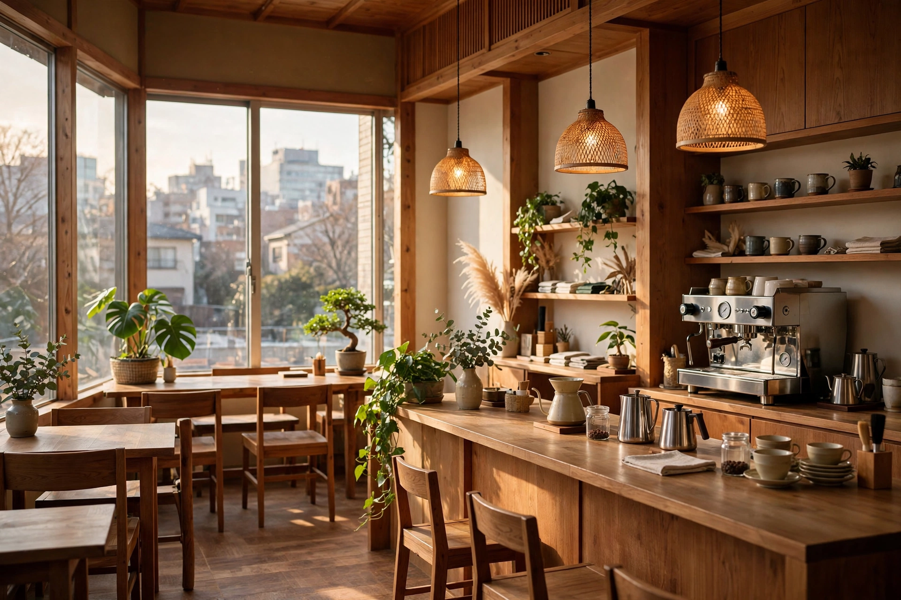
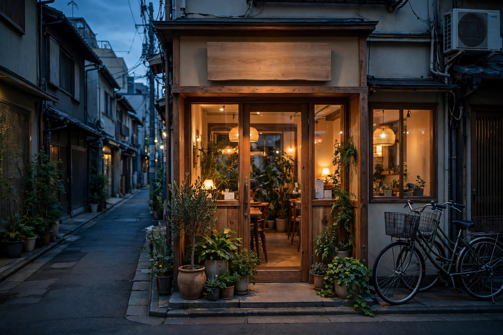

★★★★★
パンケーキが本当にふわふわで、注文してから焼いてくれるのが分かります。週末は予約必須ですが、その価値ありです。

KICHIJOJI, TOKYO
自家焙煎のコーヒーと、注文を受けてから焼き上げるスフレパンケーキ。
吉祥寺の路地裏にある、小さなカフェです。
OPEN 9:00 – 18:00（火曜定休）
お知らせ
ABOUT
井の頭公園へ続く路地の途中、築40年の木造家屋を改装して生まれたカフェです。大きな窓から差す光と、木のカウンター。席数は18席だけ。その分、一杯ずつ丁寧に淹れる時間を大切にしています。
豆は店内の小型焙煎機で少量ずつ焙煎し、挽きたての香りをそのままお届けします。パンケーキの生地も注文後に泡立てるため、少々お時間をいただきますが、焼きたてのふわふわをお楽しみください。

夕暮れ時、窓の明かりが目印です
OWNER
都内のコーヒー店で10年修業したのち、2023年にこの店を開きました。大切にしているのは、「急がない時間」をつくること。豆の産地や焙煎度合いは季節ごとに選び直し、一杯ごとに最適な淹れ方を探しています。
初めての方は、まずブレンドとスフレパンケーキのセットをどうぞ。きっとこの店の空気が伝わると思います。
店主 佐藤 健一（架空）
GALLERY
VOICES
★★★★★
パンケーキが本当にふわふわで、注文してから焼いてくれるのが分かります。週末は予約必須ですが、その価値ありです。
★★★★★
仕事の合間に使っています。Wi-Fiと電源があって静か。コーヒーも本格的で、つい長居してしまいます。
★★★★☆
路地裏で最初は迷いましたが、隠れ家感がたまりません。季節限定メニューを毎回楽しみにしています。
ACCESS
MAP
吉祥寺駅 北口から徒歩5分FAQ
はい、空席があればご案内できます。ただし週末の11時〜15時は混み合うため、パンケーキをご希望の場合はご予約がおすすめです。
注文を受けてから生地を泡立てて焼くため、20分ほどいただいています。お急ぎの場合は、焼き菓子とドリンクのセットがおすすめです。
はい、自家焙煎豆を100gから販売しています。挽いた状態でのお渡しも可能です。オンライン販売も行っています。
入口に段差が1段ありますが、スタッフがお手伝いします。テーブル席はベビーカーのままご利用いただけます。
RESERVE
パンケーキの焼き上げにお時間をいただくため、週末はご予約がおすすめです。
ご予約を受け付けました（デモ表示）。当日はお気をつけてお越しください。